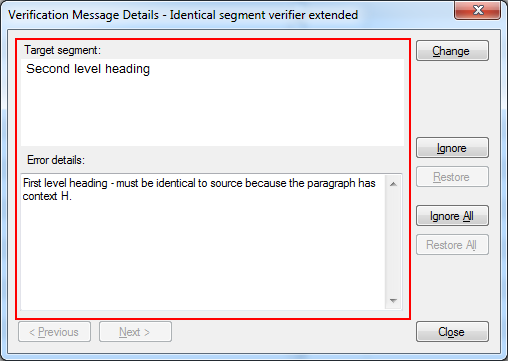

Create a Custom Message Control
In this section, a simple custom message control will be developed for the IdenticalCheck global verifier described in How to Create a Global Verifier.
This project can be found in the samples directory under Sdl.Verification.Sdk.IdenticalCheck.Extended (code located in the MessageUI folder).
Overview
The custom message control that will be developed will show a BasicSegmentEditControl with the target segment and a text box that describes the identical verification message and will also include the paragraph context.

Creating the custom message data class
During verification, the verifier creates verification messages that includes the text, the origin, severity (note, warning, error), and from and upto locations.
In the IdenticalCheck global verifier, we need the verifier to add the paragraph context to the verification message. To do this, a custom message data object that contains the detailed error with paragraph context must be added to the verification message. In addition, we would like to provide the suggestion for target segment replacement.
A custom message data class needs to be defined for the custom message data object with the paragraph context and suggestion for target segment replacement.
- Create a class called
IdenticalVerifierMessageData. - Change the constructor so that it accepts a string
errorDetailsargument. - Add a
ErrorDetailsproperty with a public getter and a private setter. - Change the constructor so that it sets the
ErrorDetailsproperty from theerrorDetailsargument. - Add a
Suggestionproperty with a public getter and a private setter. - Change the constructor so that it sets the
Suggestionproperty from thesuggestionargument.
A custom message class also needs to inherit from Sdl.FileTypeSupport.Framework.IntegrationApi.ExtendedMessageEventData. ExtendedMessageEventData has a MessageType property that should be set to uniquely identify that type of verification message.
- Add a using reference to
Sdl.FileTypeSupport.Framework.IntegrationApi. - Make the class inherit from ExtendedMessageEventData.
- Change the constructor so that it sets the
MessageTypeto "Sdl.Verification.Sdk.IdenticalCheck.Extended, Error_NotIdentical". The complete message class should look as following:
using Sdl.FileTypeSupport.Framework.BilingualApi;
using Sdl.FileTypeSupport.Framework.IntegrationApi;
namespace Verification.Sdk.IdenticalCheck.Extended.MessageUI
{
public class IdenticalVerifierMessageData : ExtendedMessageEventData
{
public IdenticalVerifierMessageData(string errorDetails, ISegment replacementSuggestion)
{
this.ErrorDetails = errorDetails;
this.ReplacementSuggestion = replacementSuggestion;
//Identifier for this custom message type
this.MessageType = "Sdl.Verification.Sdk.IdenticalCheck.MessageUI, Error_NotIdentical";
}
/// <summary>
/// Information which will be displayed in our custom UI.
/// </summary>
public string ErrorDetails
{
get;
private set;
}
/// <summary>
/// Suggestion which will be used in the custom UI for target segment replacement.
/// </summary>
public ISegment ReplacementSuggestion
{
get;
private set;
}
}
}
Adding the custom message data object to the verification message
Every verifier uses the message reporter to create verification messages. Any verifier that needs to add custom message data to the verification message needs to create their custom message data object and pass this to the message reporter.
In the IdenticalCheck global verifier, IdenticalVerifierMain.CheckParagraphUnit uses the message reporter to create verification messages. CheckParagraphUnit needs to be modified to create an IdenticalVerifierMessageData object with the paragraph context and the source segment as proposed suggestion.
In IdenticalVerifierMain.CheckParagraphUnit, add the following before the line that begins MessageReporter.ReportMessage:
string context = paragraphUnit.Properties.Contexts.Contexts[0].DisplayCode;
IdenticalVerifierMessageData extendedData = new IdenticalVerifierMessageData(completeTextTarget +
" - must be identical to source because the paragraph has context " + context + ".", segmentPair.Source);
After creating the custom or extended data object, this needs to be passed to the message reporter. Only some message reporters can handle custom or extended data and these extended message reporters implement the IBilingualContentMessageReporterWithExtendedData interface and contains just one ReportMessage method that includes the extended data as an argument. So the message reporter needs to be cast to an extended message reporter before it can be used to pass the extended data.
In IdenticalVerifierMain.CheckParagraphUnit, replace the call to MessageReporter.ReportMessage with the following:
IBilingualContentMessageReporterWithExtendedData extendedMessageReporter = (IBilingualContentMessageReporterWithExtendedData)MessageReporter;
extendedMessageReporter.ReportMessage(this, PluginResources.Plugin_Name,
ErrorLevel.Warning, PluginResources.Error_NotIdentical,
new TextLocation(new Location(segmentPair.Target, true), 0),
new TextLocation(new Location(segmentPair.Target, false), segmentPair.Target.ToString().Length - 1),
extendedData);
Since only some message reporters can handle custom or extended data and implement IBilingualContentMessageReporterWithExtendedData, then code should be added to guard against this possibility. In the following code, the message reporter is checked to see whether it implements IBilingualContentMessageReporterWithExtendedData if so then the extended data is passed to ReportMessage and if not then the extended data is not passed to ReportMessage.
if (MessageReporter is IBilingualContentMessageReporterWithExtendedData)
{
#region CreateExtendedData
string context = paragraphUnit.Properties.Contexts.Contexts[0].DisplayCode;
IdenticalVerifierMessageData extendedData = new IdenticalVerifierMessageData(completeTextTarget +
" - must be identical to source because the paragraph has context " + context + ".", segmentPair.Source);
#endregion
#region ReportingMessageWithExtendedData
IBilingualContentMessageReporterWithExtendedData extendedMessageReporter = (IBilingualContentMessageReporterWithExtendedData)MessageReporter;
extendedMessageReporter.ReportMessage(this, PluginResources.Plugin_Name,
ErrorLevel.Warning, PluginResources.Error_NotIdentical,
new TextLocation(new Location(segmentPair.Target, true), 0),
new TextLocation(new Location(segmentPair.Target, false), segmentPair.Target.ToString().Length - 1),
extendedData);
#endregion
}
else
{
#region ReportingMessageWithoutExtendedData
MessageReporter.ReportMessage(this, PluginResources.Plugin_Name,
ErrorLevel.Warning, PluginResources.Error_NotIdentical,
new TextLocation(new Location(segmentPair.Target, true), 0),
new TextLocation(new Location(segmentPair.Target, false), segmentPair.Target.ToString().Length - 1));
#endregion
}
Creating a custom message control
The custom message control is a user-control that is created by the custom message plug-in just before showing a verification message. A custom message control only shows one verification message and after showing the verification message then it is disposed. It does not have to implement any specific interfaces or constructors. The custom message plug-in is responsible for passing any information that the custom message control needs in the constructor.
Verification messages are represented by MessageEventArgs in Sdl.FileTypeSupport.Framework.IntegrationApi.MessageEventArgs contains information like the message text, message severity (note, warning, error), message origin, text location, and the extended data. So most custom message control are going to need the MessageEventArgs passed in the constructor from the custom message plug-in.
In the IdenticalCheck global verifier, a simple user-control needs to be created to display the identical verification message with the paragraph context and suggestion for target segment replacement.
- Create a user-control called
IdenticalVerifierMessageUI. - Add a panel and resize it in way you would like to represent the target segment content.
- Add a text box for displaying detailed error message.
- Add using reference to
Sdl.FileTypeSupport.Framework.IntegrationApi. - Add an argument to the constructor called messageEventArgs with type
MessageEventArgs - Add an argument to the constructor called
originalSegmentwith type ISegment - The custom message control can be any size but it is important to set the
MinimumSizeon the control. If the custom message control's minimum size is too large for the verification form then the custom message control will be displayed with scroll bars. The verification form has a minimum size so ideally the custom message control should be developed to always display without clipping and without scroll bars. To do this, the custom message control should be developed to have a minimum size of 392, 275 or less.
The messageEventArgs contains all the information about the verification message including the custom or extended data in the ExtendedData property. The ExtendedData property will reference the identical verifier's custom data object - IdenticalVerifierMessageData - and this contains theErrorDetails and ReplacementSuggestion properties we need in our custom UI.
Add the following code to the constructor to retrieve and set the data required in the custom UI control and the private Suggestion field which will be used to replace target segment content.
IdenticalVerifierMessageData messageData = (IdenticalVerifierMessageData)messageEventArgs.ExtendedData;
this.tb_ErrorDetails.Text = messageData.ErrorDetails;
_suggestion = new Suggestion(messageEventArgs.FromLocation, messageEventArgs.UptoLocation,
messageData.ReplacementSuggestion.Clone() as IAbstractMarkupData);
Now we need a controls which are able to display our target segment. The Sdl.DesktopEditor.BasicControls.BasicSegmentEditControl is a simplified control for basic displaying and editing of a bilingual content. In our custom UI we will initialize the control and then add the control to the panel we created earlier. The BasicSegmentEditControl can be set as read only - for read/write you would need to add events to handle changes done by the translator manually.
Creating a custom message plug-in
A custom message plug-in only supports some verification messages and not all verification messages. For those supported verification messages, a custom message plug-in can create a custom message control to show the supported verification message. A custom message plug-in needs to implement IMessageControlPlugIn and the the class should be marked with the MessageControlPlugInAttribute.
In the IdenticalCheck global verifier, a custom message plug-in needs to be developed to create custom message controls; IdenticalVerifierMessageUI.
- Create a class called
IdenticalVerifierMessagePlugIn. - Add using reference to
Sdl.DesktopEditor.EditorApi. - Add using reference to
Sdl.FileTypeSupport.Framework.BilingualApi. - Add using reference to
Sdl.FileTypeSupport.Framework.IntegrationApi. - Add using reference to
Sdl.Verification.Api. - Mark the class with the
MessageControlPlugInattribute. - Make the class implement IMessageControlPlugIn - use Visual Studio to add empty implementations.
IdenticalVerifierMessagePlugInneeds to implement theSupportsMessagemethod and determine whether a given verification message is supported or not. All the verification messages reported by theIdenticalCheckglobal verifier include a custom or extended data object with typeIdenticalVerifierMessageData.
Replace IdenticalVerifierMessagePlugIn.SupportsMessage method with the following code.
public bool SupportsMessage(MessageEventArgs messageEventArgs)
{
return messageEventArgs.ExtendedData != null &&
messageEventArgs.ExtendedData.GetType().Equals(typeof(IdenticalVerifierMessageData));
}
IdenticalVerifierMessagePlugIn needs to implement the CreateMessageControl method. There are five arguments that provide a variety of information that the plug-in and the control can use but we are only concerned here with the verification message represented by the messageEventArgs argument. This verification message can be used to create our custom message control IdenticalVerifierMessageUI.
Replace IdenticalVerifierMessagePlugIn.CreateMessageControl method with the following code.
public UserControl CreateMessageControl(IMessageControlContainer messageControlContainer, MessageEventArgs messageEventArgs,
IBilingualDocument bilingualDocument, ISegment sourceSegment, ISegment targetSegment)
{
if (!SupportsMessage(messageEventArgs))
{
throw new ArgumentException("messageEventArgs is not supported by this message control plug-in", "messageEventArgs");
}
return new IdenticalVerifierMessageUI(messageEventArgs, targetSegment);
}
The entire IdenticalVerifierMessagePlugIn class should look as following:
using System;
using System.Windows.Forms;
using Sdl.DesktopEditor.EditorApi;
using Sdl.FileTypeSupport.Framework.BilingualApi;
using Sdl.FileTypeSupport.Framework.IntegrationApi;
using Sdl.Verification.Api;
namespace Verification.Sdk.IdenticalCheck.Extended.MessageUI
{
[MessageControlPlugIn]
public class IdenticalVerifierMessagePlugIn : IMessageControlPlugIn
{
#region SupportsMessage
public bool SupportsMessage(MessageEventArgs messageEventArgs)
{
return messageEventArgs.ExtendedData != null &&
messageEventArgs.ExtendedData.GetType().Equals(typeof(IdenticalVerifierMessageData));
}
#endregion
#region CreateMessageControl
public UserControl CreateMessageControl(IMessageControlContainer messageControlContainer, MessageEventArgs messageEventArgs,
IBilingualDocument bilingualDocument, ISegment sourceSegment, ISegment targetSegment)
{
if (!SupportsMessage(messageEventArgs))
{
throw new ArgumentException("messageEventArgs is not supported by this message control plug-in", "messageEventArgs");
}
return new IdenticalVerifierMessageUI(messageEventArgs, targetSegment);
}
#endregion
}
}
Summary
That completes the work necessary to display a custom message control for verification messages produced by the IdenticalCheck global verifier. If the user double-clicks on a verification message produced by the IdenticalCheck global verifier then the Verification Details form will show the custom message control shown in the Overview.